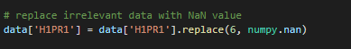
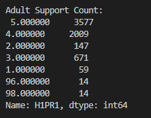
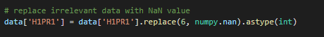
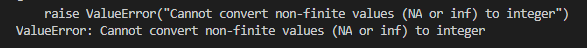
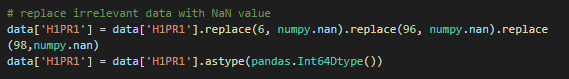
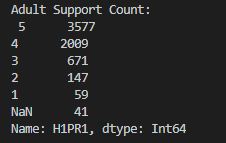
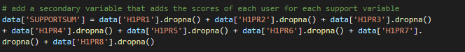
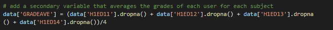
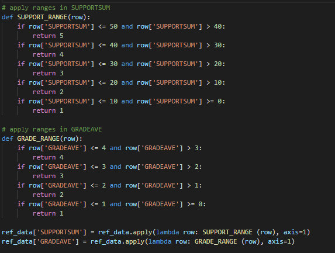
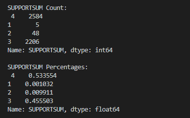

Making Data Management Decisions
For this week, the course talks about how to manage your data in such a way that it will be meaningful to the target audience. The first part talks about setting aside irrelevant data and converting them to NaN instead. In my second blog post, I have already removed or hid irrelevant data from my frequency tables. Conversion to NaN was done instead using the replace method. However as it can be seen from the results below, just doing the replace method makes my integer values into floats because NaN is a float type.


Converting it to an integer type using the astype method would not work on missing values as well and will return a Value error.


In order to preserve my integer values and the NaN value, I converted it to an Int64Dtype which could hold integer dtypes and missing values.


Next, I added two secondary variables for support and grade values. For support variables, there are a total of eight (8) questions each having a likert scale from 1 to 5. This results to a total score of 40 for all questions. I added them all in a variable called SUPPORTSUM while dropping those with NA values.

For the grade values, there are four (4) questions that I have considered which are the Math, English, Science, and History. I created a second variable called GRADEAVE that would have the mean average of those 4 grades.

To have a more meaningful data, I applied ranges for both of these secondary variables. For the SUPPORTSUM, I have created five ranges though, in my case, only four is needed. These ranges have a size of 10. GRADEAVE has four needed ranges with a size of only 1.

After that, I have printed the counts and percentages of SUPPORTSUM and GRADEAVE as seen below.

If you are interested to see the whole code, I have attached it below.
Download my code